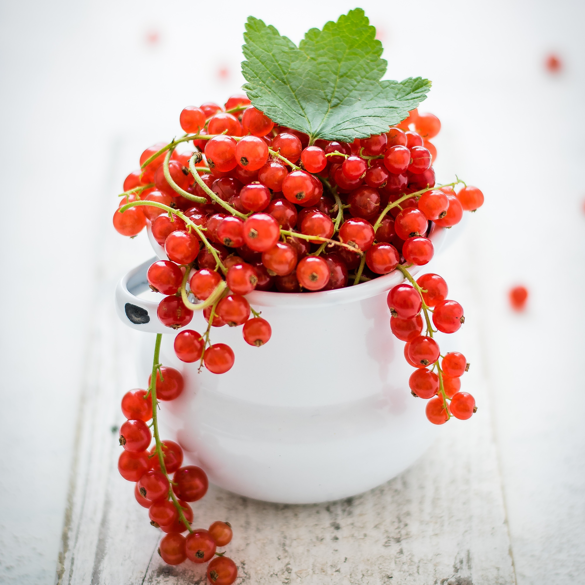

Produkty
Maté Sirup
Maté, nápoj původem z Argentiny, je známé svou nenapodobitelnou chutí a povzbuzujícími účinky. V poslední době se těší velké oblibě jako nealkoholický nápoj nahrazující přeslazené limonády.

Rybízová šťáva
Rybízová šťáva jako od babičky! Dokonalá harmonie sladké a kyselé chuti zaručí skvělé osvěžení. Rybíz je ručně sbíraný z českých zahrádek.

Angreštová limonáda
Tyto netradiční plody z našich zahrádek už mizí. Znovuojevte jedinečnou chuť v podobě angreštové limonády! Hodí se perfektně na horká letní odpoledne.